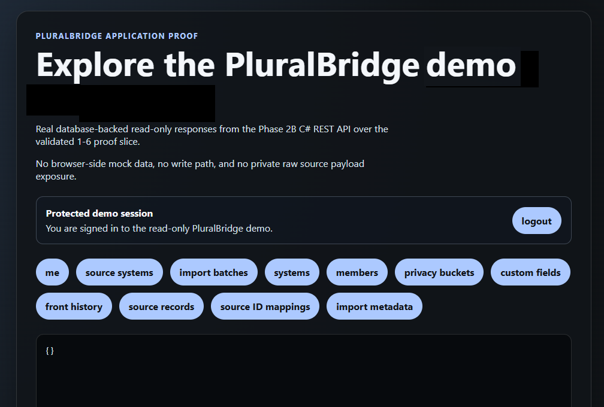
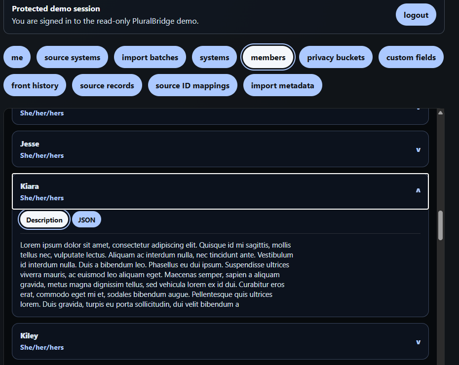

PluralBridge app preview
PluralBridge Application
We want to demonstrate the direction of PluralBridge as a full application: a cloud-hosted database, REST API, and browser app working together with real anonymized Simply Plural export data. It is an early public look at the foundation we are building for preservation, review, and future migration workflows.
Explore the PluralBridge demo
This demo shows PluralBridge becoming a full application: a cloud-hosted database, REST API, and browser app working together with real anonymized Simply Plural export data. It gives visitors a first look at how preserved data can become readable, useful, and ready for future migration work.

What PluralBridge shows
The hosted demo uses anonymized imported Simply Plural data. It shows preserved information in a friendlier browser view while keeping the current work focused on preservation, review, and future migration support.
- Members
- Front history
- Privacy buckets
- Custom fields
- Source records
- Import metadata
Readable member data
Member records can be opened and reviewed in the browser, giving Systems a practical first look at their preserved data outside the original Simply Plural app.

Where this goes next
PluralBridge is not a full Simply Plural replacement today. The next phase is expanding this foundation toward usable app workflows, richer viewers, and future migration support.